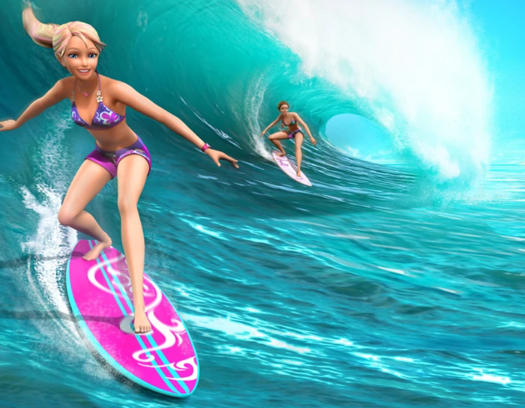
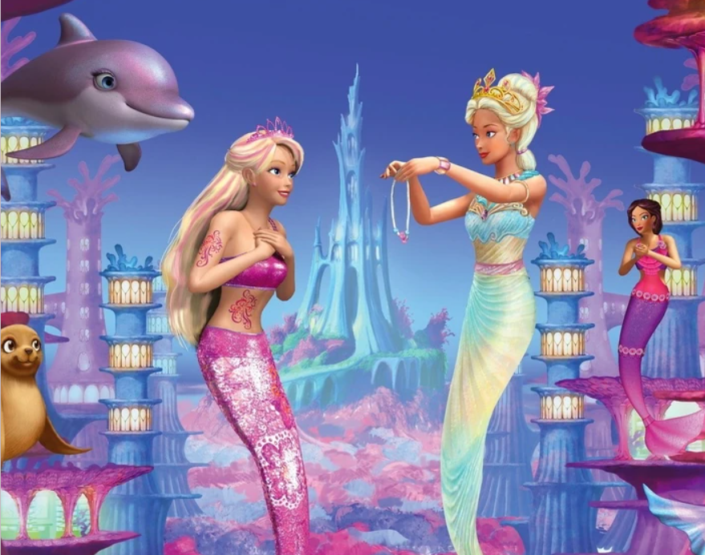
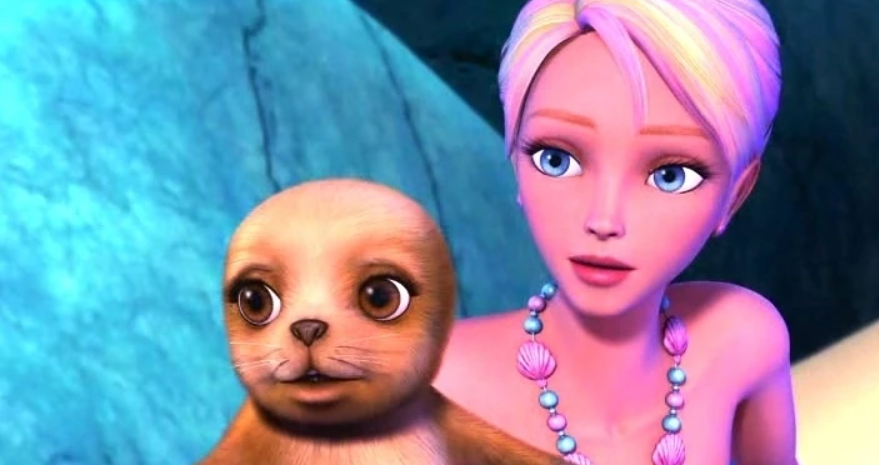

A MERMAID TALE 2
Merliah Summers
By: Lilianna Boyer- 06/19/2025
In Oceana, the residents were celebrating Merliah's one-year anniversary of her arrival to Oceana. In the human world, with support from Break, Hadley, and Fallon, Merliah was competing in the annual Surfing Invitational at Laguna Beach. Merliah and her biggest surfing rival, Kylie Morgan from Australia, were very competitive with each other.
In the competition, Fallon came in third place, Kylie was second, and Merliah was first. The next part of the competition would have Kylie, Merliah, Fallon and their friends going to the World Championship Surfing Invitational in Australia. Snouts came to see Merliah, so she went with him to tell her mother about the surf meet.
Mermaid Disguise
When trying to be a mermaid, she has to look like one. She wears a pink bikini top with seashells on them and a fake mermaid tail with the colors deep purple and sky-blue. The tail has moon and star designs on them.
Wavecrest Model
In Australia, Merliah is picked to be the new model in Wavecrest Surf Gear, which she accepts. Her bikini is similar to the first movie, but the details on the top are different. She was forced to remove her necklace and wear a different one that Georgie Majors gave to her. Her hairstyle is changed, as well.
Merliahs friend Snouts
Snouts is very easily excited because when he saw Zuma, he swam towards her and licked her all over. He also knows quite a bit about fashion because when Merliah Summers was getting her mermaid makeover, he looked over at Zuma and then shook his head when he didn't like her outfit. Snouts is also very caring towards Merliah because when she was getting the Celestial Comb, he winced whenever she was having trouble climbing the amethyst rocks.